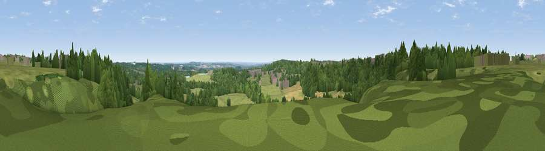

Viewpoint near Annesley
#31971 in England · top 49% of its area beats it · near Annesley · access?Where it is
The exact computed spot (SK 51425 54725). Click the marker for map links.
Public access: no public right of way or access land is recorded at this exact spot — it may be on private land. Computed from Natural England's CRoW access layer and OpenStreetMap rights of way — not the legal definitive map. Always verify locally.
The view, rendered

A 360° render of this exact spot computed from the terrain model, tree cover and land cover — summer colours, afternoon light, calibrated against photographs of famous viewpoints. Real trees, hedges and buildings will differ in detail.
The panorama
Grey silhouette: terrain skyline in each direction (720 bearings, Earth curvature and refraction included). Dashed green: skyline with trees (+15 m) and buildings (+8 m) as obstacles. Blue strip: how far the ground is visible on each bearing.
Where the view opens
Wedge length = distance to the farthest visible ground on that bearing (vegetation-aware). Rings at 10, 25 and 50 km.
What fills the view
46% grassland · 42% woodland · 6% cropland · 5% built-up
Angular shares of the visible panorama (visual magnitude), not map area. Landscape diversity 0.46 (0–1 Shannon).
Key numbers
More beautiful places nearby
The staircase of upgrades: each row has a higher view potential than everything closer. Driving times are estimates from straight-line distance, calibrated against real road routing — check an actual route before setting out.
| Place | Direction | Drive | Score |
|---|---|---|---|
| Viewpoint near Nuncargate | W · 2 km | ~4 min | 45.8 |
| Viewpoint near Newstead | S · 3 km | ~7 min | 53.4 |
| Viewpoint near Greasley | SSW · 7 km | ~14 min | 56.2 |
| Viewpoint near Arnold | SE · 11 km | ~21 min | 64.1 |
| Viewpoint near Brackenfield | WNW · 16 km | ~29 min | 68.3 |
| The Tors | W · 17 km | ~29 min | 68.9 |
| Crich Stand | W · 17 km | ~30 min | 73.0 |
| Alport Height | W · 21 km | ~35 min | 73.9 |
53.08727, -1.23364 · source: screening · position refined by local search. Computed location — check access rights before visiting.